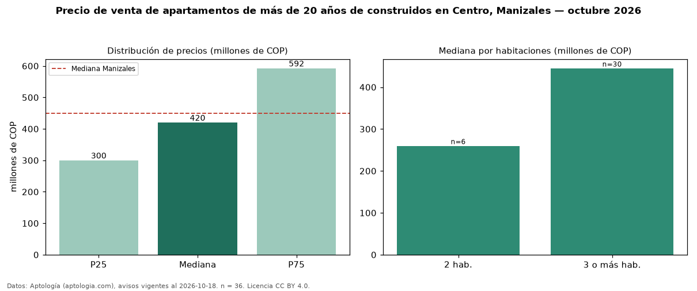

Precio de venta de apartamentos de más de 20 años de construidos en Centro, Manizales — octubre 2026
COP 420 millones es el precio mediano de apartamentos de más de 20 años de construidos en venta en Centro, Manizales (n = 36 avisos). Eso es 11 % más que la mediana de todos los apartamentos en venta de Centro (COP 380 millones, n = 57); este segmento reúne el 63 % de esos avisos. El área mediana anunciada es 122 m². El segmento con más oferta es el de 3 o más habitaciones (30 avisos, mediana COP 445 millones); pasar de 2 habitaciones a 3 o más habitaciones cambia la mediana +71 %. La administración mediana declarada es COP 341.791 al mes (n = 18). La mitad central de los avisos va de COP 300 millones a COP 592 millones (razón 2,0), una dispersión moderada. El estrato más frecuente es 3 (44 % de los avisos con estrato). La mediana de todos los apartamentos en venta de Manizales es COP 450 millones (−7 % de diferencia). Datos: Aptología (aptologia.com), CC BY 4.0 — https://www.aptologia.com/venta/manizales/centro. Archivos: PDF, CSV con las cifras y gráfica PNG.

| Avisos únicos | 36 |
|---|---|
| Percentil 25 | COP 300.000.000 |
| Mediana | COP 420.000.000 |
| Percentil 75 | COP 592.500.000 |
Fuente: avisos vigentes de portales inmobiliarios recopilados por Aptología, deduplicados (mínimo 30 avisos únicos por celda). Precios pedidos, no cerrados. Fecha: 2026-10-18.